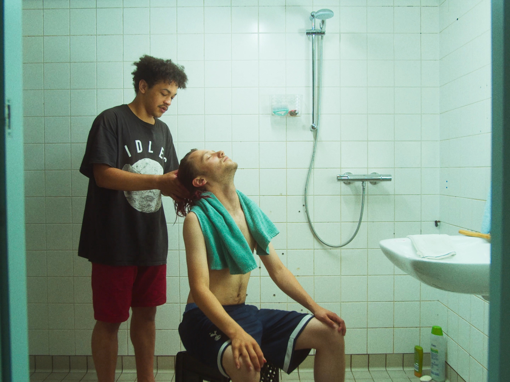
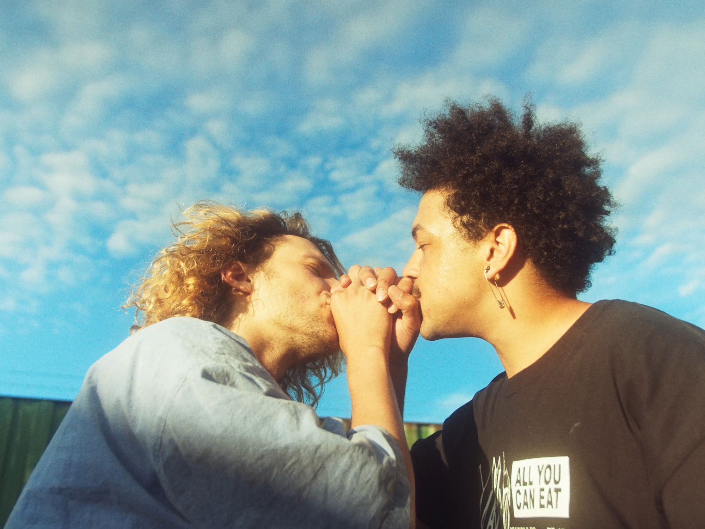
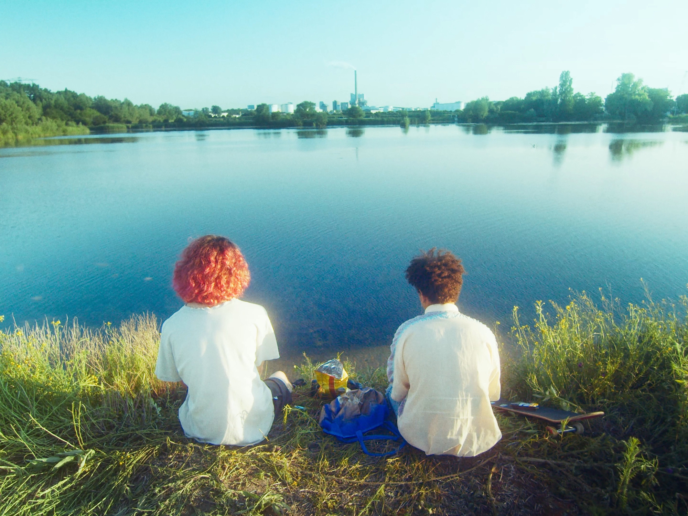
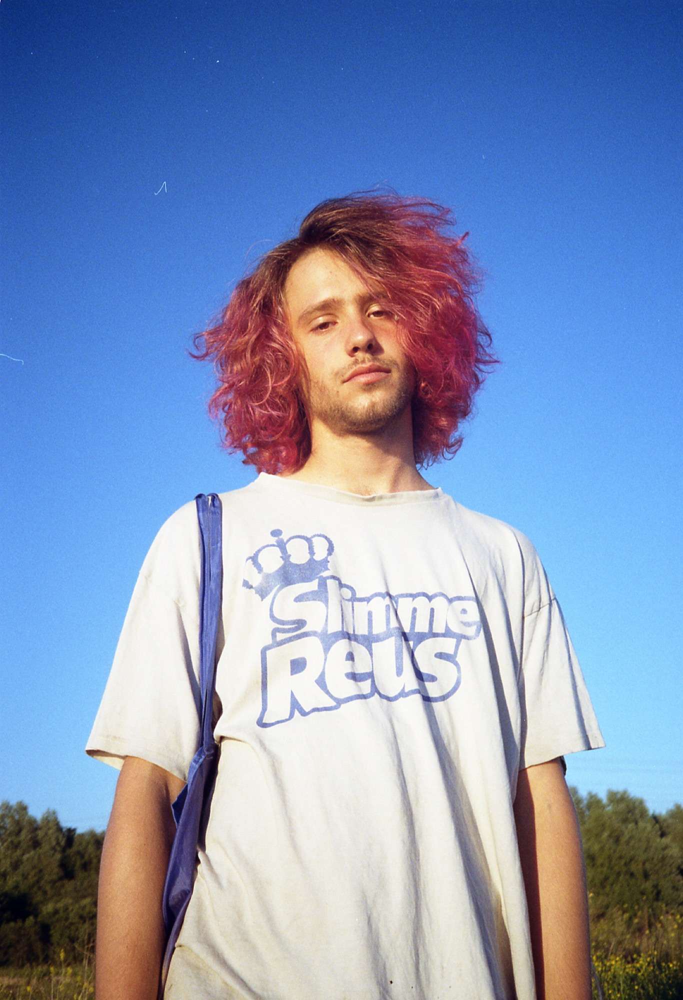
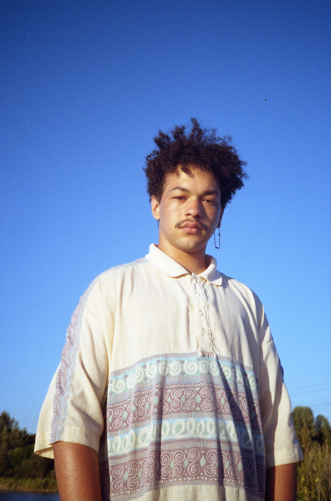
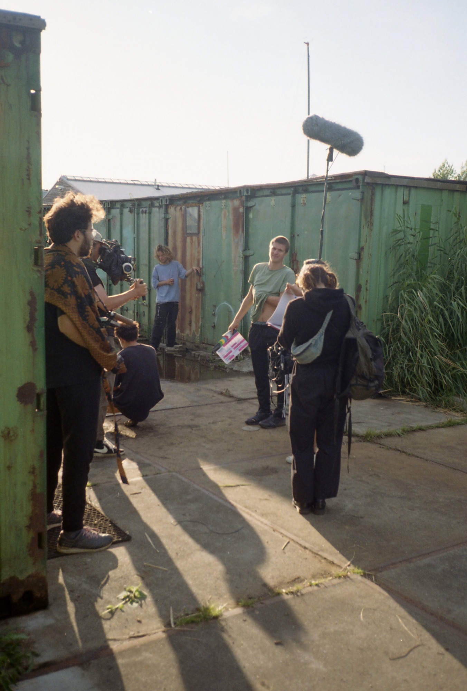
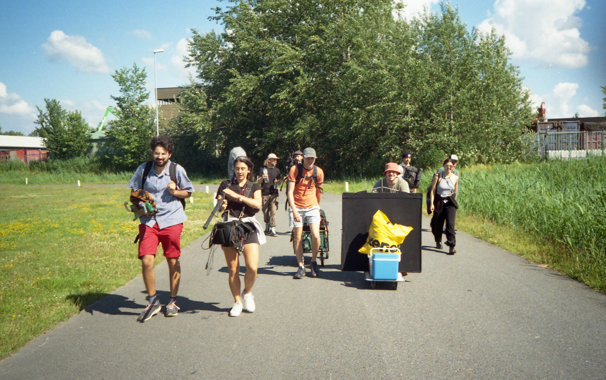
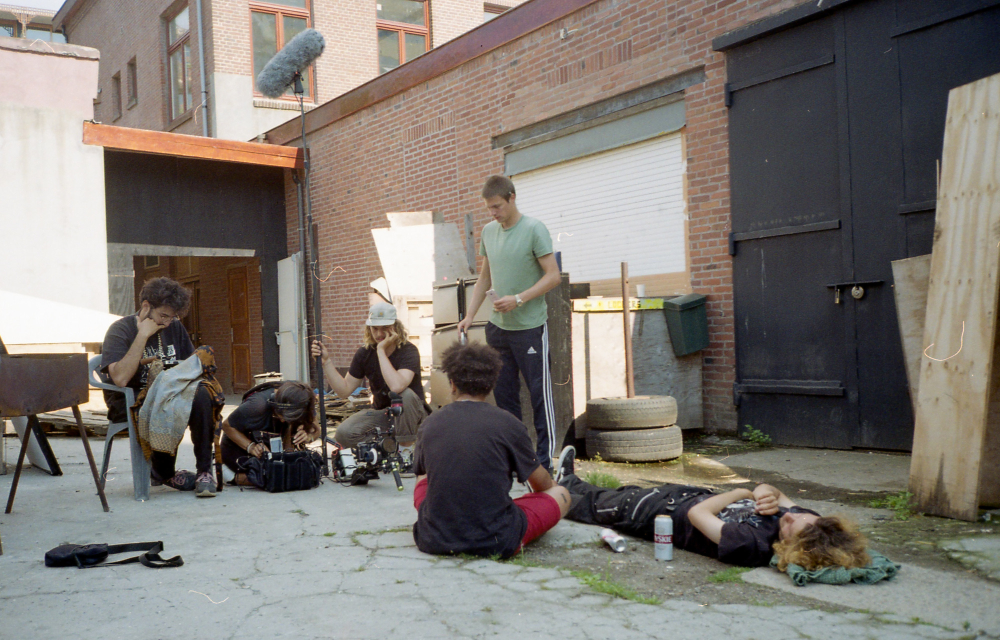

Incendios
SHORT FILM / 2021 / 7 MIN.
After finishing secondary school, two teenage friends hang out in the industrial margins of their rapidly changing hometown. It’s the middle of the summer, the last summer the boys have to explore their relationship before one of them is forced to move away.
→Streaming for free on GagaOOLala (with an account).
Statement by director Mateo Vega
Incendios was created relatively spontaneously in the summer of 2020, with a tiny budget and an incredibly generous young cast and crew from Amsterdam. As in previous projects, I was interested in exploring the disruptive effects of gentrification and urban renewal, but this time through the eyes of teenage boys who do not (yet) have the political vocabulary to explicitly address it. Rather, politics happen to them and puts their sense of home and friendship at stake. On the one hand, their future feels uncertain and fragile, on the other, the boys just want to have fun and make the best of their time together. Parallel to this, I wanted to explore a vulnerable, soft masculinity in a context and life stage that doesn’t necessarily accommodate for it. In the end, they run out of time together and we only catch ambiguous glimpses of what their future might hold.

ScreeningS
2021
Hamburg International Film Festival, Mo & Friese, Germany.
Festifreak - La Plata IFF, Argentina.
Shortcutz, Amsterdam, NL.
Hotel Mokum, NL.
Nederlands Film Festival, Student Competition, NL.
2022
Leiden Shorts, NL.
Filmtheater Kriterion, NL.
Frameline: San Francisco International LGBTQ Film Festival, US.
2023
Roze Filmdagen, NL.
2024
Glued & Screwed, NL

Credits
starring Osei Parris & Dmitri Visser
written & directed by Mateo Vega
creative producer & 1st AD Yannesh Meijman
cinematography Sam Broekman
art director Kotryna Buruckaitė
editor Eva Plompen
sound recording Sofie van der Meer
sound design & mix Olmo van Straalen
original soundtrack Romy Day Winkel
casting & assistant director Sara Luna Zorić
gaffer Derk Hennink
production manager Nano Rodriguez
production assistant Levi Defares
catering Dieuwke de Vos
colour grading Qianwei Tong @ Captcha!
visual effects Lucas Huikeshoven
title design Wouter Stroet
typeface Charlotte Rohde
produced by Radio Voorwaarts

Press
2024
GAY45 (EN).
2021
La Tierra Quema (ES).
Behind the scenes




